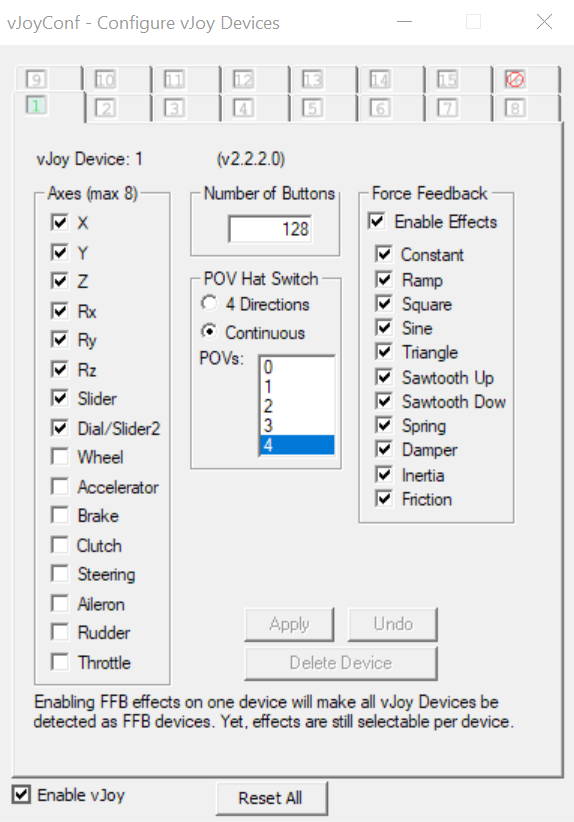
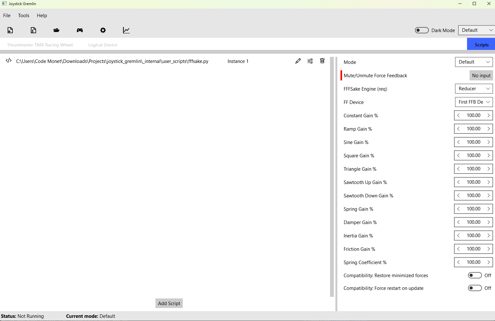
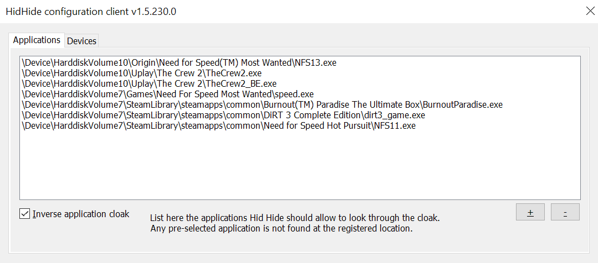
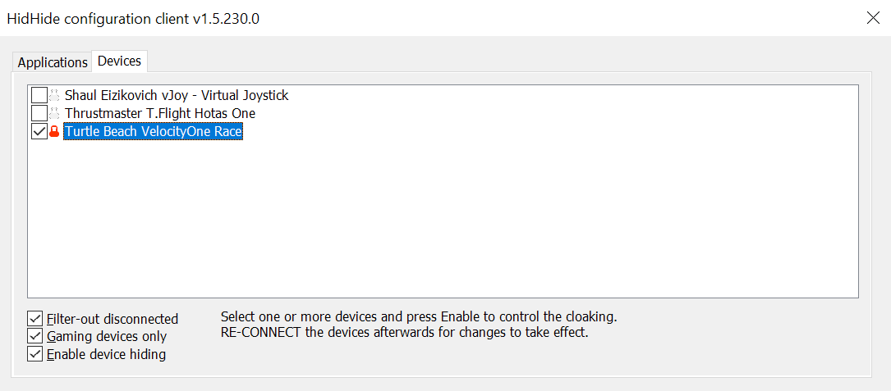

FFFSake Setup with Joystick Gremlin R14
Budget about 15 minutes for this one-time setup.
Using FFFSake requires the following third party dependencies. First, download them all:
- vJoy virtual joystick driver. Please download the latest signed driver from Brunner Innovation's fork on GitHub.
- Joystick Gremlin, R14.3 or newer.
- Sim Gamer Kit
- (Strongly Recommended) HidHide,
a kernel-mode filter driver to hide physical devices from games. You
will probably have a lot of trouble configuring your game to use vJoy,
or using
FFFSake, if you don't hide the physical device redirected through vJoy from the game. HidHide is the best option, at the time of this writing.
Install and configure these:
- Install vJoy. You can skip the reboot, doing it after the next step.
- Install HidHide and reboot.
- Extract Joystick Gremlin to a directory of your choice.
- Extract the Sim Gamer Kit to a directory of your choice.
- Launch the
Configure vJoyapp from the Start Menu and configure vJoy. The recommendation on the Joystick Gremlin page is a bit outdated; instead, I suggest following this guide if you play mostly driving games. For everyone else, the recommended default is:

- Plug in your FFB device, then launch and configure Joystick Gremlin:
- Suggestion for new users: verify that your plugged in physical device shows
up; switch to that tab. From the
Toolsmenu, run theAuto Mapper. Once done, scroll down the list of inputs and verify that a 1:1 mapping was created. - Switch to the
Scriptstab. Use theAdd Scriptbutton and browse to thejoystick_gremlin\r14_plugins\fffsake.pyfile, at the location you extracted Sim Gamer Kit to. - Once the plugin has been added, click on the cog wheel for the plugin to
open its configuration. From the
FF Devicedropdown in plugin configuration, ensure your FFB capable device is shown; most people would have exactly one such device. You can either select it, or leave the default to use the first detected FFB-capable device. - Select either the
forwarderor thereducerengine. See section below for details. If you're not sure, start with thereducerengine if using a wheel andforwarderif using a joystick. - Bind a button for
Mute/Unmute Force Feedback. Think of this as a safety cutoff button, to be pressed if you lose control of your FFB device. For this reason, use a button not on the FFB joystick/wheel rim. It doesn't need to be on the FFB device either. Once done, the plugin page should look something like follows:
- Save the profile.
- Close Joystick Gremlin for the next step.
- Suggestion for new users: verify that your plugged in physical device shows
up; switch to that tab. From the
- Launch and
configure HidHide:
- Decide if you want to use list all the games you want to use with vJoy (allowlist, "Inverse cloak" unchecked), or list all the games and applications you won't be using with vJoy (blocklist, "Inverse cloak" checked). The example below shows the blocklist approach.
- Add paths to all the applications that belong to the above list. For
games with launchers, you want the game binary path, not the launcher.
I typically launch the game, and then use Windows Task
Manager (launch via
Ctrl + Shift + Esc) to find the path of the application.exefile. The applications tab should look something like:
- If using an allowlist, make sure to add paths to Joystick Gremlin as well as the control panel/configuration application for your physical device. This includes software like Logitech GHUB, Moza Pit House, Fanatec App, TurtleBeach VelocityOne Tuner etc.
- On the devices tab, select the physical device (needs to be plugged in to show up) that you want to use through Joystick Gremlin.
- Check "Enable filtering" and unplug-replug (or power off/on) the
device.

- Launch Joystick Gremlin, ensure that your physical device is still there. If not, double check that you added the Joystick Gremlin application path correctly (if you're using the allowlist approach) in HidHide. Then click on "Enable" button.
This is a lot of setup; if you made it this far, congratulations! You've enabled some really powerful tools for your sim gaming journey. I suggest starting with a single Joystick Gremlin profile and then branching out to more as you gain experience with these tools.